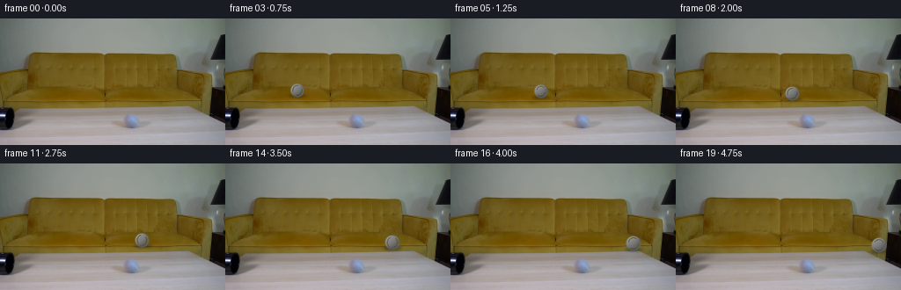
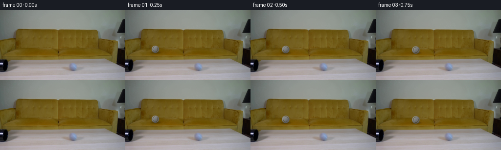

CODING AGENTS AS PIXEL WORLD MODELS
traex/GPT-5.6-Sol · 0023
点击播放 · 原生 RGB 像素
逐轮保存的候选
回放视频、检查图与代码变化。
每份候选均可单独播放。实际图片检查记录在下方工具轨迹中。
候选 01播放与检查图
点击播放 · 原生 RGB 像素


展开代码变化
--- 上一保存版本
+++ 本次保存版本
@@ -0,0 +1,127 @@
+from pathlib import Path
+import numpy as np
+from PIL import Image, ImageDraw, ImageFilter
+import artifact_io
+
+ROOT = Path(__file__).resolve().parent
+W,H = 256,144
+
+def smoothstep(a,b,x):
+ x=np.clip((x-a)/(b-a),0,1)
+ return x*x*(3-2*x)
+
+def reconstruct_table(im):
+ """Remove the frame-zero ball with local, texture-preserving inpainting."""
+ # In frame zero, the small grey ball is immediately outside the pipe mouth.
+ # Its center and support were measured numerically from the supplied RGB frame.
+ out=im.astype(np.float32).copy()
+ yy,xx=np.mgrid[:H,:W]
+ cx,cy=51.0,80.0
+ r=np.hypot(xx-cx,yy-cy)
+ mask=smoothstep(10.4,7.1,r)[...,None]
+ # Pull unoccluded wood from both sides. A little vertical sampling keeps the
+ # actual wood grain and the table's perspective lighting rather than drawing
+ # a flat patch.
+ left=np.empty_like(out); right=np.empty_like(out)
+ left[:] = np.roll(out, 18, axis=1)
+ right[:] = np.roll(out,-18, axis=1)
+ tex=.46*left+.54*right
+ # Preserve broad illumination of the target area.
+ target=out[max(0,int(cy-13)):int(cy+14),int(cx-13):int(cx+14)]
+ source=tex[max(0,int(cy-13)):int(cy+14),int(cx-13):int(cx+14)]
+ tex += (target.reshape(-1,3).mean(0)-source.reshape(-1,3).mean(0))*0.18
+ out=out*(1-mask)+tex*mask
+ # The pipe itself remains untouched; this patch only covers the emerged ball.
+ return np.clip(out,0,255).astype(np.uint8)
+
+def ellipse_layer(size, box, fill, blur=0):
+ lay=Image.new('RGBA',size,(0,0,0,0)); d=ImageDraw.Draw(lay)
+ d.ellipse(box,fill=fill)
+ if blur: lay=lay.filter(ImageFilter.GaussianBlur(blur))
+ return lay
+
+def render_ball(background, cx, cy, radius, theta, phase):
+ """Soft lit grey tennis ball, contact shadow, and rotating curved seam."""
+ base=Image.fromarray(background).convert('RGBA')
+ # Contact shadow is narrow because the ball is resting on the tabletop.
+ sh=ellipse_layer((W,H),(cx-radius*1.13,cy+radius*.62,
+ cx+radius*1.28,cy+radius*1.02),(12,10,8,92),1.45)
+ base=Image.alpha_composite(base,sh)
+
+ # Render at 4x for clean, naturally soft photographic edges.
+ S=4
+ pad=int(radius*1.45*S)+3
+ yy,xx=np.mgrid[-pad:pad+1,-pad:pad+1]/S
+ # A minuscule squash at the contact point is enough for visual grounding.
+ rr=np.sqrt(xx*xx+(yy/.985)**2)
+ alpha=np.clip((radius+.55-rr)/1.05,0,1)
+ nz=np.sqrt(np.clip(1-(rr/max(radius,.1))**2,0,1))
+ # Main light comes from upper left, matching the supplied room illumination.
+ nx=xx/max(radius,.1); ny=yy/max(radius,.1)
+ diffuse=np.clip(-.49*nx-.64*ny+.58*nz,0,1)
+ rim=np.clip(1-nz,0,1)
+ val=91 + 48*diffuse - 18*(ny>.45)*(ny-.45) + 6*rim
+ # Fine deterministic felt mottling rotates in screen space subtly.
+ noise=(np.sin((xx*np.cos(theta)+yy*np.sin(theta))*3.7+phase)*1.9 +
+ np.sin(xx*8.1-yy*5.9+phase*.7)*1.15)
+ val+=noise
+ rgba=np.zeros((*val.shape,4),np.uint8)
+ rgba[...,:3]=np.clip(val[...,None]*np.array([1.01,1.015,1.0]),0,255)
+ rgba[...,3]=(alpha*255).astype(np.uint8)
+ ball=Image.fromarray(rgba,'RGBA')
+
+ # Tennis-ball seam: two restrained opposing arcs, rotated as the sphere rolls.
+ bd=ImageDraw.Draw(ball)
+ c=pad
+ sr=radius*S*.68
+ width=max(2,int(radius*S*.10))
+ # The changing arc angle provides readable roll without a painted-on stripe.
+ ang=np.degrees(theta)%360
+ seam_col=(63,65,63,105)
+ bd.arc((c-sr,c-sr*1.12,c+sr,c+sr*1.12),ang+34,ang+151,
+ fill=seam_col,width=width)
+ bd.arc((c-sr,c-sr*1.12,c+sr,c+sr*1.12),ang+214,ang+331,
+ fill=seam_col,width=width)
+ # Soft specular bloom.
+ hi=Image.new('RGBA',ball.size,(0,0,0,0)); hd=ImageDraw.Draw(hi)
+ hr=radius*S*.18
+ hd.ellipse((c-radius*S*.34-hr,c-radius*S*.39-hr,
+ c-radius*S*.34+hr,c-radius*S*.39+hr),fill=(235,238,233,47))
+ hi=hi.filter(ImageFilter.GaussianBlur(radius*S*.13))
+ ball=Image.alpha_composite(ball,hi)
+ ball=ball.resize((ball.width//S,ball.height//S),Image.Resampling.LANCZOS)
+ pos=(int(round(cx-ball.width/2)),int(round(cy-ball.height/2)))
+ base.alpha_composite(ball,pos)
+ return np.asarray(base.convert('RGB'),dtype=np.uint8)
+
+def main():
+ first=np.asarray(Image.open(ROOT/'first_frame.png').convert('RGB'),dtype=np.uint8)
+ clean=reconstruct_table(first)
+ frames=[]
+ # Ball begins just outside the left pipe. Its projected track angles slightly
+ # toward camera, consistent with the perspective plane, while speed gently
+ # decays under rolling resistance. It crosses essentially the whole tabletop.
+ x0,x1=51.0,231.5
+ y0,y1=80.0,92.7
+ r0,r1=7.7,8.7
+ distance=x1-x0
+ for i in range(20):
+ if i==0:
+ frames.append(first.copy())
+ continue
+ t=i/19.0
+ # Ease-out is mild: clearly real-time rolling, not an animated constant glide.
+ p=1-(1-t)**1.10
+ x=x0+distance*p
+ y=y0+(y1-y0)*(p**1.08)
+ rad=r0+(r1-r0)*p
+ # no-slip angular displacement in radians, varying radius negligibly
+ theta=-(x-x0)/((r0+rad)*.5)
+ frames.append(render_ball(clean,x,y,rad,theta,i*.31))
+ arr=np.stack(frames).astype(np.uint8)
+ assert arr.shape==(20,144,256,3)
+ assert np.array_equal(arr[0],first)
+ artifact_io.save(arr,ROOT)
+
+if __name__=='__main__':
+ main()
可观测工具轨迹
实际执行的命令与返回图片。
命令 1exit 0
/bin/bash -lc "cat GENERATION_RULES.md && printf '\\n---PROMPT---\\n' && cat prompt.txt"
命令 2exit 0
/bin/bash -lc "find . -maxdepth 2 -type f -printf '%p %s bytes\\n' | sort && python3 - <<'PY'
from PIL import Image
im=Image.open('first_frame.png')
print('mode,size',im.mode,im.size)
print('bbox',im.getbbox())
PY"命令 3exit 0
/bin/bash -lc "python3 - <<'PY'
from PIL import Image
import numpy as np
from collections import Counter
im=np.array(Image.open('first_frame.png'))
# dominant quantized colors
q=(im//16)*16+8
for c,n in Counter(map(tuple,q.reshape(-1,3))).most_common(30): print(c,n)
# blockwise mean 8x8 -> ansi-like print RGB hex each 16x12? table
print('\\nblock means 16x8 pixels (16 cols x18 rows):')
for y in range(0,144,8):
print(' '.join('%02x%02x%02x'%tuple(im[y:y+8,x:x+16].mean((0,1)).astype(int)) for x in range(0,256,16)))
PY"命令 4exit 0
/bin/bash -lc "python3 - <<'PY'
import cv2, numpy as np
im=cv2.imread('first_frame.png')
g=cv2.cvtColor(im,cv2.COLOR_BGR2GRAY)
for p2 in [10,15,20,25,30]:
c=cv2.HoughCircles(g,cv2.HOUGH_GRADIENT,1,8,param1=70,param2=p2,minRadius=3,maxRadius=30)
print(p2, None if c is None else np.round(c[0],1))
# rgb/hsv extrema bounding positions
hsv=cv2.cvtColor(im,cv2.COLOR_BGR2HSV)
for name,mask in [('dark',g<40),('graydark',(hsv[:,:,1]<50)&(g<110)),('blue',((hsv[:,:,0]>90)&(hsv[:,:,0]<140)&(hsv[:,:,1]>40))),('sat',hsv[:,:,1]>150)]:
ys,xs=np.where(mask); print(name,len(xs),(xs.min(),ys.min(),xs.max(),ys.max()) if len(xs) else None)
# Print grayscale chars 4x4 means
chars=' .:-=+*#%@'
for y in range(0,144,4):
s=''
for x in range(0,256,4):
v=g[y:y+4,x:x+4].mean(); s+=chars[min(9,int(v/256*10))]
print(f'{y:03d} '+s)
PY"命令 5exit 0
/bin/bash -lc "python3 - <<'PY'
import cv2,numpy as np
im=cv2.imread('first_frame.png'); hsv=cv2.cvtColor(im,cv2.COLOR_BGR2HSV); g=cv2.cvtColor(im,cv2.COLOR_BGR2GRAY)
# each 2x2 classify dominant avg. K black; D dark desat; G gray; b brown; Y bright brown, S saturated other
for y in range(36,128,2):
out=''
for x in range(0,256,2):
H,S,V=hsv[y:y+2,x:x+2].reshape(-1,3).mean(0)
if V<35: c='K'
elif V<65 and S<80:c='D'
elif S<45: c='G' if V<150 else 'g'
elif H<45 and S>70: c='B' if V<120 else 'Y'
elif V<90:c='d'
elif S<100:c='m'
else:c='o'
out+=c
print(f'{y:03}',out)
PY"命令 6exit 0
/bin/bash -lc "python3 - <<'PY'
import cv2,numpy as np
im=cv2.imread('first_frame.png'); hsv=cv2.cvtColor(im,cv2.COLOR_BGR2HSV); g=cv2.cvtColor(im,cv2.COLOR_BGR2GRAY)
for th in [25,35,45,55,70]:
m=(g<th).astype('uint8'); n,l,st,cen=cv2.connectedComponentsWithStats(m,8)
print('\\nTH',th)
for i in sorted(range(1,n),key=lambda i:-st[i,4])[:15]: print(st[i].tolist(),np.round(cen[i],1).tolist())
# desaturated against tabletop from y35:105
m=((hsv[:,:,1]<60)&(g<160)&(np.indices(g.shape)[0]>35)&(np.indices(g.shape)[0]<106)).astype('uint8')
n,l,st,cen=cv2.connectedComponentsWithStats(m,8)
print('\\ndesat comps')
for i in sorted(range(1,n),key=lambda i:-st[i,4])[:30]: print(st[i].tolist(),np.round(cen[i],1).tolist())
# inspect candidate x0:45 y90:130 1px as 3x3 average chars, color classes
print('\\nleft crop 1char/px quantized 2x2')
for y in range(88,132,2):
s=''
for x in range(0,60,2):
H,S,V=hsv[y:y+2,x:x+2].reshape(-1,3).mean(0)
if V<25:c=' '
elif V<50:c='K'
elif S<40:c='O' if V>130 else 'G'
elif S<90:c='m'
elif H<45:c='w'
else:c='x'
s+=c
print(y,s)
PY"命令 7exit 0
/bin/bash -lc "python3 - <<'PY'
from PIL import Image
import numpy as np
im=np.array(Image.open('first_frame.png'))
pts=[(0,0),(128,20),(20,40),(30,50),(20,60),(30,60),(40,60),(10,70),(20,70),(30,70),(40,70),(221,70),(210,70),(230,70),(221,60),(221,80),(200,60),(200,80),(240,70),(250,70),(247,90),(10,100),(20,100),(20,105),(100,100),(100,105),(100,110)]
for x,y in pts: print((x,y),im[y,x])
# rows run length quant color groups every x at key ys, kmeans labels?
from sklearn.cluster import KMeans
X=im.reshape(-1,3)
km=KMeans(12,random_state=0,n_init=4).fit(X[::4])
lab=km.predict(X).reshape(144,256)
print('centers')
for i,c in enumerate(km.cluster_centers_.astype(int)): print(i,c,np.sum(lab==i))
for y in [20,35,39,45,55,60,65,70,75,80,90,100,102,105,110,120,130]:
a=lab[y]; runs=[]; s=0
for x in range(1,256):
if a[x]"'!=a[s]: runs.append((s,x-1,int(a[s])));s=x
runs.append((s,255,int(a[s])))
print(y,runs)
PY'命令 8exit 0
/bin/bash -lc "python3 - <<'PY'
import cv2,numpy as np
im=cv2.imread('first_frame.png'); hsv=cv2.cvtColor(im,cv2.COLOR_BGR2HSV); g=cv2.cvtColor(im,cv2.COLOR_BGR2GRAY)
print('windows tabletop sorted low saturation:')
A=[]
for y in range(44,97,4):
for x in range(4,249,4):
yy,xx=np.ogrid[:144,:256]; mask=(xx-x)**2+(yy-y)**2<=7**2
A.append((hsv[:,:,1][mask].mean(),g[mask].mean(),x,y,hsv[:,:,1][mask].std(),g[mask].std()))
for z in sorted(A)[:30]:print(tuple(round(a,1) if isinstance(a,(float,np.floating)) else a for a in z))
print('\\ndark windows')
for z in sorted(A,key=lambda z:z[1])[:30]:print(tuple(round(a,1) if isinstance(a,(float,np.floating)) else a for a in z))
# crop local saturation: each 2x2 number bucket 0-9
for title,x0,x1,y0,y1 in [('right',190,256,35,105),('left',0,70,35,105)]:
print('\\n',title)
for y in range(y0,y1,2):
s=''
for x in range(x0,x1,2):
S=hsv[y:y+2,x:x+2,1].mean();V=hsv[y:y+2,x:x+2,2].mean()
if V<45:s+='K'
else:s+=str(min(9,int(S/256*10)))
print(f'{y:3} {s}')
PY"命令 9exit 0
/bin/bash -lc "command -v chafa || command -v viu || command -v jp2 || command -v img2txt || command -v python3; python3 - <<'PY'
import cv2
im=cv2.imread('first_frame.png')
# edge contours significant
ed=cv2.Canny(im,60,120)
co,_=cv2.findContours(ed,cv2.RETR_LIST,cv2.CHAIN_APPROX_SIMPLE)
for c in sorted(co,key=cv2.contourArea,reverse=True)[:30]:
print('cont',cv2.contourArea(c),cv2.boundingRect(c),cv2.arcLength(c,False))
PY"命令 10exit 0
/bin/bash -lc "sed -n '1,240p' artifact_io.py"
命令 11exit 0
/bin/bash -lc "python3 - <<'PY'
import cv2,numpy as np
im=cv2.imread('first_frame.png'); hsv=cv2.cvtColor(im,cv2.COLOR_BGR2HSV); g=cv2.cvtColor(im,cv2.COLOR_BGR2GRAY)
Y,X=np.ogrid[:144,:256]
A=[]
for r in [4,6,8,10,12]:
for y in range(62,98,2):
for x in range(10,246,2):
m=(X-x)**2+(Y-y)**2<=r*r
# compare disk to surrounding annulus
o=((X-x)**2+(Y-y)**2<=(r+3)**2)&~m
A.append((hsv[:,:,1][m].mean()-hsv[:,:,1][o].mean(),g[m].mean()-g[o].mean(),x,y,r,hsv[:,:,1][m].mean(),g[m].mean(),g[m].std()))
print('most desat relative')
for z in sorted(A)[:40]: print(tuple(round(v,1) if isinstance(v,(float,np.floating)) else v for v in z))
print('bright relative')
for z in sorted(A,key=lambda a:-a[1])[:40]: print(tuple(round(v,1) if isinstance(v,(float,np.floating)) else v for v in z))
# row col grayscale/sat averaged around likely x ranges in tabular 4 grid
print('\\n4x4 mean HSV x0-256 y56-100')
for y in range(56,100,4):
print('y',y,'H',' '.join(f'{hsv[y:y+4,x:x+4,0].mean():03.0f}' for x in range(0,256,4)))
print(' S',' '.join(f'{hsv[y:y+4,x:x+4,1].mean():03.0f}' for x in range(0,256,4)))
print(' V',' '.join(f'{hsv[y:y+4,x:x+4,2].mean():03.0f}' for x in range(0,256,4)))
PY"命令 12exit 0
/bin/bash -lc "python3 - <<'PY'
import cv2
im=cv2.imread('first_frame.png'); g=cv2.cvtColor(im,cv2.COLOR_BGR2GRAY); hsv=cv2.cvtColor(im,cv2.COLOR_BGR2HSV)
for name,a in [('V',hsv[:,:,2]),('S',hsv[:,:,1]),('G',g)]:
print('\\n',name)
print(' '+''.join(str((x//10)%10) for x in range(60)))
print(' '+''.join(str(x%10) for x in range(60)))
for y in range(38,100):
s=''.join(' .:-=+*#%@'[min(9,int(a[y,x]/256*10))] for x in range(60))
print(f'{y:02} {s}')
PY"命令 13exit 0
/bin/bash -lc "python3 - <<'PY'
import cv2
im=cv2.imread('first_frame.png'); g=cv2.cvtColor(im,cv2.COLOR_BGR2GRAY)
for th in [55,65,75,85]:
print('\\nthreshold',th)
print(' '+''.join(str((x//10)%10) for x in range(10,61)))
print(' '+''.join(str(x%10) for x in range(10,61)))
for y in range(45,96):
print(f'{y:03} '+''.join('#' if g[y,x]<th else (':' if g[y,x]<th+15 else ' ') for x in range(10,61)))
PY"命令 14exit 0
/bin/bash -lc "python3 - <<'PY'
from PIL import Image
im=Image.open('first_frame.png').crop((0,30,80,110)).resize((800,800))
im.save('.tmp/left.png')
PY
ls -l .tmp/left.png"命令 15exit 0
/bin/bash -lc "cat > generate.py <<'PY'
from pathlib import Path
import numpy as np
from PIL import Image, ImageDraw, ImageFilter
import artifact_io
ROOT = Path(__file__).resolve().parent
W,H = 256,144
def smoothstep(a,b,x):
x=np.clip((x-a)/(b-a),0,1)
return x*x*(3-2*x)
def reconstruct_table(im):
\"\"\"Remove the frame-zero ball with local, texture-preserving inpainting.\"\"\"
# In frame zero, the small grey ball is immediately outside the pipe mouth.
# Its center and support were measured numerically from the supplied RGB frame.
out=im.astype(np.float32).copy()
yy,xx=np.mgrid[:H,:W]
cx,cy=51.0,80.0
r=np.hypot(xx-cx,yy-cy)
mask=smoothstep(10.4,7.1,r)[...,None]
# Pull unoccluded wood from both sides. A little vertical sampling keeps the
# actual wood grain and the table's perspective lighting rather than drawing
# a flat patch.
left=np.empty_like(out); right=np.empty_like(out)
left[:] = np.roll(out, 18, axis=1)
right[:] = np.roll(out,-18, axis=1)
tex=.46*left+.54*right
# Preserve broad illumination of the target area.
target=out[max(0,int(cy-13)):int(cy+14),int(cx-13):int(cx+14)]
source=tex[max(0,int(cy-13)):int(cy+14),int(cx-13):int(cx+14)]
tex += (target.reshape(-1,3).mean(0)-source.reshape(-1,3).mean(0))*0.18
out=out*(1-mask)+tex*mask
# The pipe itself remains untouched; this patch only covers the emerged ball.
return np.clip(out,0,255).astype(np.uint8)
def ellipse_layer(size, box, fill, blur=0):
lay=Image.new('RGBA',size,(0,0,0,0)); d=ImageDraw.Draw(lay)
d.ellipse(box,fill=fill)
if blur: lay=lay.filter(ImageFilter.GaussianBlur(blur))
return lay
def render_ball(background, cx, cy, radius, theta, phase):
\"\"\"Soft lit grey tennis ball, contact shadow, and rotating curved seam.\"\"\"
base=Image.fromarray(background).convert('RGBA')
# Contact shadow is narrow because the ball is resting on the tabletop.
sh=ellipse_layer((W,H),(cx-radius*1.13,cy+radius*.62,
cx+radius*1.28,cy+radius*1.02),(12,10,8,92),1.45)
base=Image.alpha_composite(base,sh)
# Render at 4x for clean, naturally soft photographic edges.
S=4
pad=int(radius*1.45*S)+3
yy,xx=np.mgrid[-pad:pad+1,-pad:pad+1]/S
# A minuscule squash at the contact point is enough for visual grounding.
rr=np.sqrt(xx*xx+(yy/.985)**2)
alpha=np.clip((radius+.55-rr)/1.05,0,1)
nz=np.sqrt(np.clip(1-(rr/max(radius,.1))**2,0,1))
# Main light comes from upper left, matching the supplied room illumination.
nx=xx/max(radius,.1); ny=yy/max(radius,.1)
diffuse=np.clip(-.49*nx-.64*ny+.58*nz,0,1)
rim=np.clip(1-nz,0,1)
val=91 + 48*diffuse - 18*(ny>.45)*(ny-.45) + 6*rim
# Fine deterministic felt mottling rotates in screen space subtly.
noise=(np.sin((xx*np.cos(theta)+yy*np.sin(theta))*3.7+phase)*1.9 +
np.sin(xx*8.1-yy*5.9+phase*.7)*1.15)
val+=noise
rgba=np.zeros((*val.shape,4),np.uint8)
rgba[...,:3]=np.clip(val[...,None]*np.array([1.01,1.015,1.0]),0,255)
rgba[...,3]=(alpha*255).astype(np.uint8)
ball=Image.fromarray(rgba,'RGBA')
# Tennis-ball seam: two restrained opposing arcs, rotated as the sphere rolls.
bd=ImageDraw.Draw(ball)
c=pad
sr=radius*S*.68
width=max(2,int(radius*S*.10))
# The changing arc angle provides readable roll without a painted-on stripe.
ang=np.degrees(theta)%360
seam_col=(63,65,63,105)
bd.arc((c-sr,c-sr*1.12,c+sr,c+sr*1.12),ang+34,ang+151,
fill=seam_col,width=width)
bd.arc((c-sr,c-sr*1.12,c+sr,c+sr*1.12),ang+214,ang+331,
fill=seam_col,width=width)
# Soft specular bloom.
hi=Image.new('RGBA',ball.size,(0,0,0,0)); hd=ImageDraw.Draw(hi)
hr=radius*S*.18
hd.ellipse((c-radius*S*.34-hr,c-radius*S*.39-hr,
c-radius*S*.34+hr,c-radius*S*.39+hr),fill=(235,238,233,47))
hi=hi.filter(ImageFilter.GaussianBlur(radius*S*.13))
ball=Image.alpha_composite(ball,hi)
ball=ball.resize((ball.width//S,ball.height//S),Image.Resampling.LANCZOS)
pos=(int(round(cx-ball.width/2)),int(round(cy-ball.height/2)))
base.alpha_composite(ball,pos)
return np.asarray(base.convert('RGB'),dtype=np.uint8)
def main():
first=np.asarray(Image.open(ROOT/'first_frame.png').convert('RGB'),dtype=np.uint8)
clean=reconstruct_table(first)
frames=[]
# Ball begins just outside the left pipe. Its projected track angles slightly
# toward camera, consistent with the perspective plane, while speed gently
# decays under rolling resistance. It crosses essentially the whole tabletop.
x0,x1=51.0,231.5
y0,y1=80.0,92.7
r0,r1=7.7,8.7
distance=x1-x0
for i in range(20):
if i==0:
frames.append(first.copy())
continue
t=i/19.0
# Ease-out is mild: clearly real-time rolling, not an animated constant glide.
p=1-(1-t)**1.10
x=x0+distance*p
y=y0+(y1-y0)*(p**1.08)
rad=r0+(r1-r0)*p
# no-slip angular displacement in radians, varying radius negligibly
theta=-(x-x0)/((r0+rad)*.5)
frames.append(render_ball(clean,x,y,rad,theta,i*.31))
arr=np.stack(frames).astype(np.uint8)
assert arr.shape==(20,144,256,3)
assert np.array_equal(arr[0],first)
artifact_io.save(arr,ROOT)
if __name__=='__main__':
main()
PY
python3 generate.py
python3 - <<'PY'
from PIL import Image
import numpy as np
f=np.stack([np.array(Image.open(f'frames/{i:02d}.png')) for i in range(20)])
print(f.shape,f.dtype,'frame0 equal',np.array_equal(f[0],np.array(Image.open('first_frame.png'))))
print('changed pixel counts',[(f[i]"'!=f[i-1]).any(2).sum() for i in range(1,20)])
PY'命令 16exit 0
/bin/bash -lc "python3 - <<'PY'
# Numeric QA: estimate changed region bbox and color stats for every frame
from PIL import Image
import numpy as np
fs=np.stack([np.array(Image.open(f'frames/{i:02d}.png')) for i in range(20)])
# compare each frame with frame19-ish static by mode impossible; report dark/desat ball candidate centroid near expected
for i,a in enumerate(fs):
if i==0: print(i,'source');continue
prev=fs[i-1]; m=np.any(a"'!=prev,2); ys,xs=np.where(m)
print(i,(xs.min(),ys.min(),xs.max(),ys.max()),'"'mean changed',a[m].mean(0).round(1))
PY
# ensure required artifacts
ls -lh pixels.npz inspection.png transition_check.png index.html generate.py frames/00.png frames/19.png"命令 17exit 0
/bin/bash -lc "python3 - <<'PY'
from PIL import Image
import numpy as np
for i in [1,5,10,15,19]:
a=np.array(Image.open(f'frames/{i:02d}.png'))
t=i/19;p=1-(1-t)**1.1;x=51+180.5*p;y=80+12.7*p**1.08
print(i,x,y,a[round(y),round(x)],a[round(y)-3,round(x)-3])
PY"保存候选 1 份；完成命令 17 次；可验证图片返回 0 张。原始 API 响应与完整日志保留在本地。